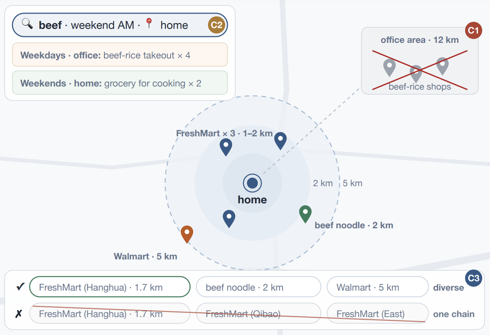
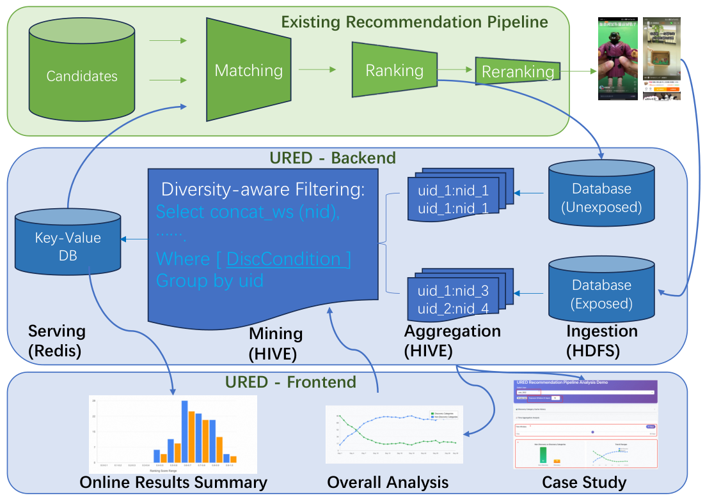

Contents · 9 sections
1What problem is it actually solving?2The big picture: one model doing retrieval and pre-ranking3Part one: encoding value into the SID (QP-SID)4Part two: value scoring inside the same model (VRM)5Training in two steps: first learn to speak SID, then learn retrieval6What the experiments show7Limitations as I see them8How an e-commerce search team could try it9Conclusion and assessmentSHARE
Worth reading for teams doing e-commerce search who are trying out generative retrieval. It answers a problem that generative retrieval runs into soon after launch: the model generates an item's SID from semantics, while the ranking stages care about clicks and purchases, so what gets retrieved is "relevant but doesn't sell". TSGR (Taobao Search Generative Retrieval) is Taobao Search's answer. The core idea fits in one sentence. Rank items by clicks inside the SID, so that items that sell well and fit the current query get codes that are easier to generate. Then attach a scoring module to the same model that reads item features and re-ranks the candidates, so one model does both retrieval and pre-ranking. Offline HR@1000 rises from 0.7735 for the baseline FORGE (an SID construction method) to 0.8651 (Table 2); in a 38-day A/B test on 1% of traffic, GMV rose 1.64% and transactions 1.12% (Section 4.4). I think its most useful contribution is splitting "value" into two places, encoding and scoring, with an ablation for each. The caveats are that the re-ranking module lifts hits in the top 1000 but lowers hits in the top 20, and that the description of the online A/B setup is inconsistent.
What problem is it actually solving?
Generative retrieval works like this: train an autoregressive model that takes the query and user information and directly generates candidate items' SIDs one by one with beam search. The paper points out two places where existing schemes cannot see an item's commercial value.
The first is the SID itself. A typical SID comes from layer-by-layer clustering of multimodal embeddings and reflects only one relation, semantic similarity. Items with similar semantics but very different sales fall into the same SID neighborhood. And each item has a single global SID, so its code is the same no matter what the user searches for.
The second is candidate ordering. Beam search orders candidates by generation probability, which reflects semantic match, not whether the user will click or buy. Features such as an item's sales and category are only known once the candidate has been generated and identified, so they cannot be put into the input during generation.
The paper's example from Appendix A.4 runs through this piece: in the phone case cluster, some items are magnetic and some are not. When a user searches for "magnetic phone case", we want the magnetic, well-selling ones at the front. The small table below is illustrative:
| Item (illustrative) | Total clicks, last 30 days | Clicks under the term "magnetic" | Default rank | Rank under "magnetic" |
|---|---|---|---|---|
| Plain silicone case A | 9000 | 50 | 1 | 3 |
| Magnetic case B | 6000 | 4000 | 2 | 1 |
| Magnetic case C | 3000 | 2500 | 3 | 2 |
Ranked by total clicks alone, case A comes first; but for "magnetic phone case", B and C should be generated first. TSGR wants the codes to switch to a different ordering depending on the query.
The big picture: one model doing retrieval and pre-ranking

The whole pipeline can be read from this table:
| Stage | Input | Output |
|---|---|---|
| SID construction (offline) | Item embeddings, categories, same-item clusters, clicks over the last 30 days | A three-level SID per item, with 4 orderings at level 3 |
| Generation | User profile, query, behavior history (behaviors are also written as SIDs) | Candidate SIDs from beam search |
| Re-ranking | Hidden states from generation, candidate SIDs and item features | A value score per candidate, re-ranked by score |
| Training | Pre-SFT multi-task pretraining, then SFT | Generation loss and scoring loss optimized together |
The key division of labor: the SID makes the model lean toward high-value items already at generation time, and the scoring module fills in the item features that generation cannot see. The former changes the generation probability itself; the latter corrects afterwards. The generation backbone is Qwen2.5-0.5B. Let's take them apart.
Part one: encoding value into the SID (QP-SID)
The first two levels are the semantic codebook, built on the existing hierarchy "an item belongs to a same-item cluster, a cluster belongs to a category". Level 1 uses categories directly: Taobao has 8,100+ categories, close to the codebook size of 8192, so the average item embedding within each category becomes one level-1 code. Then the average embedding of each cluster minus the average embedding of its category gives a residual, and RQ-KMeans on these residuals learns the later codebooks. The result given in Section 3.1 is an 8192×4×8192 three-level intermediate codebook: level 1 is the category, the next two levels come from residual quantization, and the middle level has only 4 codes; the original text's account of what it means stops there. Adding the efficiency level described below would make the SID four levels, too costly online, so the authors merge the first two levels into one (8192×4=32768), and the final SID has three levels with codebook size 32768×8192×8192. Because cluster centroids rather than individual items are quantized, items in the same cluster are guaranteed to share the same prefix.
Level 3 is called the efficiency codebook: within each cluster, items are ranked by value, and the rank becomes the level-3 code. Why does a front rank help? Level-3 codes are shared across all clusters; the front codes are occupied by items in almost every cluster and get more training signal, while the back codes are used only by large clusters. An illustrative example: cluster X has 3 items and cluster Y has 1,000; code 1 is used by the top items of both clusters, while code 900 appears only in cluster Y. Putting well-selling items on front codes aligns generation probability with value. The simplest ordering is by clicks over the last 30 days, written as the default ordering .
The default ordering ignores the query, and QP-SID (Query-aware Parallel SID) fills that gap. The authors first segment queries into key terms and count clicks on items in each cluster under each term. For each cluster, they pick the 3 most representative terms by the term's co-occurring clicks with that cluster, excluding terms whose coverage exceeds 80%. Coverage is the share of items in the cluster that were clicked under the term:
is item 's click count under term over the last 30 days. A term with coverage near 100% touches almost every item in the cluster and cannot tell which items fit the intent better, so it is dropped. Each remaining term ranks the items again by ; the paper says this yields 3 term orderings, and with the default ordering each cluster has 4 parallel orderings.
When building training data, the level-3 code is determined jointly by the query and the item's cluster. If the query's key terms intersect the cluster's representative terms, the term in the intersection with the most co-occurring clicks with that cluster is chosen and its ordering assigns the code; with no intersection, the default ordering is used:
Back to the illustrative table: a user searching "magnetic phone case" matches the phone case cluster's representative term "magnetic", so magnetic case B gets level-3 code 1. A user searching just "phone case" matches nothing, the default ordering applies, and plain case A is code 1. The same item has different SIDs under different queries, and the model learns "who should come first under this query". Online decoding (Section 4.4) is described as follows. The first two levels are decoded under a pre-built prefix tree that only allows prefixes that actually exist. The third level uses plain beam search, producing complete SIDs that are then passed to the scoring module. By the construction in Section 3.1, the prefix corresponds to a cluster, and the level-3 code is the item's rank within one of that cluster's orderings. Which ordering applies is decided by which representative term the query matches (with several matches, the one with the most co-occurring clicks). Going from an SID back to a concrete item leaves two details to fill in. The first is uniqueness. The authors only guarantee that items in the same cluster share one prefix and say the two priors give a "clean cluster partition", and Appendix A.4 writes the phone case cluster directly as Cluster (140, 3504). But the paper does not say whether the semantic codebook guarantees different prefixes for different clusters, or how the cluster and item are recovered when two cluster prefixes collide. The second is overflow. Level 3 is not constrained by the prefix tree, and the paper does not say how the generative backbone's output SID is handled when its level-3 rank exceeds the cluster's item count. When reproducing, the first can be checked offline by verifying that prefixes map one-to-one to clusters, and the second can be handled by constraining level 3 to the cluster size as well. In the paper's real example in Appendix A.4, the ordering under the term "magnetic" does move items with "magnetic" in the title to the front.
Part two: value scoring inside the same model (VRM)
Why is a scoring module still needed? The SID can only squeeze click statistics into one code, so fine-grained item features cannot get in, and beam search still orders by generation probability. The usual approach is to put a separate pre-ranking model after retrieval. The authors argue that the objectives and data distributions of the two then do not line up. The pre-ranking model scores candidates from every retrieval channel and knows nothing about the distribution the generative model itself retrieves.
VRM (Value-aware Ranking Module) grows directly on the generative model, and each of its four components does one job:
- Item representation: each beam search candidate concatenates three things. First, item features from offline feature tables, such as browsing and purchase statistics over several time windows, category and shop features, and query-item co-occurrence features. Second, the item embedding, which restores information lost in SID construction. Third, the candidate's three SID tokens passed through the backbone's embedding layer and compressed by an MLP.
- User representation: it directly reuses the backbone's hidden states over the whole input from generation, averages all positions and passes the result through an MLP, with no extra encoding.
- User-item interaction: one cross-attention layer in which the item representation queries the hidden state at every input position, so each candidate takes the parts of the user context most relevant to it.
- Scoring: the interaction result, the user representation and the item representation are concatenated and fed into three parallel heads; each head outputs a score between 0 and 1 through a sigmoid, namely PV, CTR and CVR. At inference, candidates are re-ranked by the product of the PV and CTR scores.
An illustrative hand calculation: candidate B has a PV score of 0.8 and a CTR score of 0.10, product 0.08; candidate A has a PV score of 0.9 and a CTR score of 0.05, product 0.045. Even if A's generation probability is higher, B moves ahead of A after re-ranking.
During training, VRM is optimized together with generation. The total loss is the generation loss plus times the scoring loss, with :
The scoring loss is the sum of three BCE terms for PV, CTR and CVR. By equation (14) it is defined on the same set as the generation loss, namely the items purchased, clicked or browsed in the session, and each item has one label for each of PV, CTR and CVR. The paper does not specify how these three labels are assigned as positive or negative: by the formula, unbrowsed items do not enter the loss, so where the negatives for the PV task come from is unclear. Why PV×CTR rather than the product of all three? The authors compared combinations on a pool of 5,000 candidates (Table 10): PV×CTR and the product of all three give almost the same HR@1000 (0.8651 vs 0.8650), with higher HR@20 for the former, which shows that multiplying in CVR does not help retrieval. The authors' explanation is that HR measures whether the user browsed or clicked, which PV×CTR matches directly.
Training in two steps: first learn to speak SID, then learn retrieval
A pretrained LLM cannot map items or queries to SIDs. The authors first run Pre-SFT, splitting the goal into 5 simple tasks trained as a mix (Table 1). Examples include generating an SID from an item title, generating an SID from the query alone, and predicting, given an item, the SID of items "bought by people who bought it". Figure 6 shows that each task added alone gives a positive gain, the retrieval task the largest and the title generation task the smallest. Training all 5 tasks together raises HR@1000 by 5.76 percentage points over the encoding task alone at 67.77%.
The SFT stage is the actual personalized retrieval. In a search session, the items purchased, clicked or browsed all go into one training sample as labels; Section 3.3 only states that attention masks are applied between labels to keep them from interfering. The generation loss weights behaviors differently: purchase, click and browse get weights 3, 2 and 1. Table 5 compares this with training each item separately: HR@1000 rises from 0.7714 to 0.7922, which shows that telling the model "a purchase matters more than a browse" does help retrieval.
The authors also built GRPO reinforcement learning, with the online ranking model's CTR×CVR as the reward. In appendix Table 8, with all the RL improvements added, HR@1000 only rises from 0.8111 without RL to 0.8163. The gain is too small, so it was not deployed. With the same aim of bringing in business objectives, putting item features straight into the scoring module pays off far better than tuning generation probabilities with RL.
What the experiments show
The offline data is over 200 million real interactions from two weeks of Taobao Search, with the test set taken from the next day; the main metric is HR@1000. There are two baselines: FORGE (an SID construction method used at Taobao, with level 3 assigned randomly and at most 5 items per SID) and a conventional pre-ranking model. Table 2 has three groups, SID construction, pre-processing and post-processing; methods within a group are mutually exclusive, and † marks those TSGR finally adopts. The gains the text gives for the pre-ranking model and RL equal exactly their difference from the Pre-SFT row, so the three post-processing rows are all compared on top of QP-SID plus Pre-SFT:
| Method | HR@20 | HR@100 | HR@500 | HR@1000 | HR@5000 |
|---|---|---|---|---|---|
| FORGE | 0.4328 | 0.5863 | 0.7207 | 0.7735 | 0.8604 |
| QP-SID † | 0.4635 | 0.6235 | 0.7669 | 0.8177 | 0.8961 |
| Pre-SFT † (pre-processing) | 0.4694 | 0.6340 | 0.7740 | 0.8222 | 0.8987 |
| Pre-ranking model (post-processing) | 0.4248 | 0.6264 | 0.8112 | 0.8552 | 0.8771 |
| RL (post-processing) | 0.4659 | 0.6420 | 0.7857 | 0.8277 | 0.9027 |
| VRM † (post-processing, TSGR) | 0.4586 | 0.6677 | 0.8250 | 0.8651 | 0.8953 |
Replacing FORGE with QP-SID moves HR@1000 from 0.7735 to 0.8177 and improves every K, which shows that once value and the query are encoded into the SID, generation itself more easily hits items users will click. In post-processing, the separate pre-ranking model pushes HR@1000 to 0.8552, but HR@20 drops to 0.4248 and HR@5000 falls too; VRM has higher HR@1000 and a much better HR@20 than the pre-ranking model. This shows that a jointly trained scoring module is more stable than an external pre-ranking model.

The final form of QP-SID was found by trial (Figure 3). The behavior history in the input must also be coded with QP-SID under the current query, consistent with the labels; Table 4 shows most history items are unrelated to the current query and fall in the default ordering. With default codes in the input and QP-SID labels, HR@100 under 4 orderings drops from 0.5824 to 0.5405, and the authors' explanation is that the model can no longer simply copy SIDs that appeared in the input. Another approach attached several codes to one item as labels, and 99.8% of outputs fell back to the default ordering, leaving the multiple orderings useless. In the final scheme, Table 4 shows 76.8% of training labels fall in orderings of matched representative terms, and only 32.05% of model outputs fall in the default ordering. Note that the ordering is decided from the query by rule, and the model does not generate an ordering identifier. The authors conclude that the model has learned to retrieve items from multiple orderings rather than only the default one. The source does not spell out how this output share is counted.

The VRM architecture ablation is in Figure 5 and Table 10. Removing the item embedding drops HR@1000 from 0.8651 to 0.7487, the worst of all variants, because SID construction loses a lot of item information. Removing item features lowers HR@1000 only to 0.8580, but HR@20 falls from 0.4586 to 0.4116, which shows these features mainly affect ordering at the very top. Replacing cross-attention with mean pooling or the EOS hidden state costs under 2 points of HR@1000 but 6 to 7 points of HR@20.
In deployment, the first two SID levels are constrained by a prebuilt prefix tree so only existing combinations are generated. Level 3 uses ordinary beam search, each generated candidate is scored by VRM, and the top 1,500 candidates skip pre-ranking and go straight to the ranking stage, within a 65ms latency budget. Over 38 days on 1% of traffic, GMV rose 1.64% and item detail page views 0.43%; the authors say the results are statistically significant and that the model has since been fully launched. This means the gain comes mainly from the purchase side, with a much smaller change in browsing.
Limitations as I see them
First, re-ranking lowers the very top hits. In Table 10, the same model without re-ranking has HR@20 of 0.4754 and 0.4586 after PV×CTR re-ranking, and in Table 2 HR@20 with VRM is also below Pre-SFT. This shows VRM's gain is concentrated in the top 500 to top 1000. TSGR's output goes straight to the ranking stage, so coverage of the top 1000 may matter more than the top 20, but if retrieval is followed by truncation to very few items, this trade-off needs to be recomputed.
Second, the offline comparison is narrow, and one number does not add up. The only baselines are FORGE and a pre-ranking model, with no comparison against other generative retrieval schemes or two-tower retrieval. By the same arithmetic, VRM's HR@1000 gain should be 4.29 points, yet the text says +3.73%. On the public TencentGR-10M data, VRM's HR@500 only moves from 0.0786 to 0.0794 (Table 9), so the evidence for generalization is weak.
Third, the online A/B setup is described inconsistently, and cost has no numbers. Section 4.4 first says TSGR launched as an additional retrieval channel, and then, in the same section, that the treatment group replaced the existing retrieval and pre-ranking with one model. The +1.64% GMV means very different things under the two setups. The claim that VRM adds "almost no latency" also comes with no latency or GPU usage numbers, only the 65ms budget.
How an e-commerce search team could try it
- First change only the last SID level. Under existing cluster SIDs, rank items within each cluster by clicks over the last 30 days, replace the random or semantic last-level codes, and watch how HR@1000 changes. This step does not change the model architecture. The 0.7735 to 0.8177 in Table 2 is the gain from replacing FORGE with the full QP-SID, which also includes query-dependent orderings and the rebuilt semantic codebook, so Table 2 cannot tell how much changing only the last level brings.
- Then add query-dependent orderings. Pick a few representative terms per cluster from query-item click logs, remember to drop terms with too-high coverage, and use the same coding for behavior history in the input and for labels. The check is whether the share of model outputs using non-default orderings is clearly above zero.
- Once generative retrieval is stable, attach the scoring module to the backbone, and be sure to include the item embedding. Before launch, look at HR@20 and HR@1000 together and confirm the drop in top hits is acceptable.
Conclusion and assessment
The key takeaway: to align generative retrieval with business goals, one can work from both ends. Give high-value items better positions in the encoding, and re-rank with the same model reading item features after generation. Both steps work better than adding RL afterwards.
| Dimension | Assessment |
|---|---|
| Importance of the problem | High. Once generative retrieval enters industrial search, the mismatch between retrieval results and ranking objectives is common |
| Novelty of the method | Medium-high. Ordering level-3 codes by value and switching orderings by query are new; the scoring module's architecture itself is fairly conventional |
| Experimental evidence | Medium. Large-scale offline data, step-by-step ablations and a 38-day online A/B; but few baselines, one mismatch between text and table, and an inconsistent online setup description |
| Engineering cost | Medium-high. Needs same-item clusters, a category system, query term segmentation and click statistics, a 0.5B model on GPUs, and a 65ms budget |
| Worth trying? | Yes. Start with ranking level-3 codes by value, the cheapest step; QP-SID as a whole shows the clearest gain in the paper |
How did this read for you?
Hoot made a note. Thanks for the feedback.
One tap, no sign-in; tap again to undo. Only anonymous counts are kept, never who you are.
Related papersMore from Paper Daily

Generative · 2026-11-11TS-GEAR: Taobao Shangou GEnerative Ad RetrievalIn food delivery search, a merchant that cannot reach the user's current location is not merely ranked low, it must not appear at all. Common SIDs are built only from content and collaborative signals and at best treat location as a soft signal, so unreachable merchants are filtered after generation, waste beam slots, and stay outside end-to-end training. TS-GEAR from Taobao Shangou writes locati… Generative · 2026-10-29PailitaoMMSearch2.0 Technical Report: Scaling Generative Retrieval to Unified End-to-End Multimodal SearchIn Taobao's Pailitao, a user may photograph a shirt and ask for shorts to match it, which calls for a complementary item rather than a duplicate. The usual pipeline classifies intent first and routes to separate retrieval channels, so one wrong step breaks everything after it. Alibaba's report lets a 2B vision-language model read the raw image and instruction and generate product Semantic IDs dir…
Generative · 2026-10-29PailitaoMMSearch2.0 Technical Report: Scaling Generative Retrieval to Unified End-to-End Multimodal SearchIn Taobao's Pailitao, a user may photograph a shirt and ask for shorts to match it, which calls for a complementary item rather than a duplicate. The usual pipeline classifies intent first and routes to separate retrieval channels, so one wrong step breaks everything after it. Alibaba's report lets a 2B vision-language model read the raw image and instruction and generate product Semantic IDs dir… Generative · 2026-11-05ReuseGR: Offline--Online Decoupled Generative Retrieval via Adaptive Prefix ReuseTeams putting generative retrieval into production should read this: it shows how to reuse large-model compute per query while leaving personalization to a small online model, and it is backed by an online A/B test. The same query is searched by many people every day, so generating a full Semantic ID from scratch for each request repeats work. ReuseGR splits the job in two. Offline, a large model…
Generative · 2026-11-05ReuseGR: Offline--Online Decoupled Generative Retrieval via Adaptive Prefix ReuseTeams putting generative retrieval into production should read this: it shows how to reuse large-model compute per query while leaving personalization to a small online model, and it is backed by an online A/B test. The same query is searched by many people every day, so generating a full Semantic ID from scratch for each request repeats work. ReuseGR splits the job in two. Offline, a large model…
Personalization · 2026-11-06From Waste to Discovery: Recycling High-Scored Unexposed Candidates in Taobao Feed RecommendationRanking already scores many candidates that never reach the screen. This work reuses the high-scoring part of those results to help users encounter additional categories. It accumulates these candidates per user over a month, keeps categories absent from recent exposure, and adds the results to recall. In Taobao feed experiments, new categories actually exposed to users increased by 3.47% and com… Generative · 2026-10-28SLIDE: Search-to-List Item Distillation for Single-Rollout Generative RetrievalGenerative retrieval usually produces candidates online with beam search, and the beams never see each other; writing a whole list in one go by greedy decoding is the most direct alternative but works much worse. Taobao's SLIDE (a training method that distills offline search results into lists) moves search offline: a teacher runs beam search for every training request, concatenates the retrieved…
Generative · 2026-10-28SLIDE: Search-to-List Item Distillation for Single-Rollout Generative RetrievalGenerative retrieval usually produces candidates online with beam search, and the beams never see each other; writing a whole list in one go by greedy decoding is the most direct alternative but works much worse. Taobao's SLIDE (a training method that distills offline search results into lists) moves search offline: a teacher runs beam search for every training request, concatenates the retrieved… Generative · 2026-10-21AGR: Agentic Generative Retrieval with Tool-Augmented SearchGenerative retrieval need not encode every available feature up front. AGR requests intent, location, or behavioral evidence while decoding item identifiers, then resumes generation with a compact observation. A Kuaishou online experiment reports a 0.205% increase in requests with strongly relevant top-four results.
Generative · 2026-10-21AGR: Agentic Generative Retrieval with Tool-Augmented SearchGenerative retrieval need not encode every available feature up front. AGR requests intent, location, or behavioral evidence while decoding item identifiers, then resumes generation with a compact observation. A Kuaishou online experiment reports a 0.205% increase in requests with strongly relevant top-four results. Generative · 2026-10-15WeGR: Unified Generative Retrieval for Industrial Search Systems in WeChatDeep dive: WeGR: Unified Generative Retrieval for Industrial Search Systems in WeChat.
Generative · 2026-10-15WeGR: Unified Generative Retrieval for Industrial Search Systems in WeChatDeep dive: WeGR: Unified Generative Retrieval for Industrial Search Systems in WeChat. Generative · 2026-08-13UniScale: Synergistic Entire Space Data and Model Scaling for Search RankingDeep dive: UniScale: Synergistic Entire Space Data and Model Scaling for Search Ranking.
Generative · 2026-08-13UniScale: Synergistic Entire Space Data and Model Scaling for Search RankingDeep dive: UniScale: Synergistic Entire Space Data and Model Scaling for Search Ranking.
Discussion
Add experiment details, reproduction notes or a different take. Requires a GitHub sign-in.
Loading the discussion…